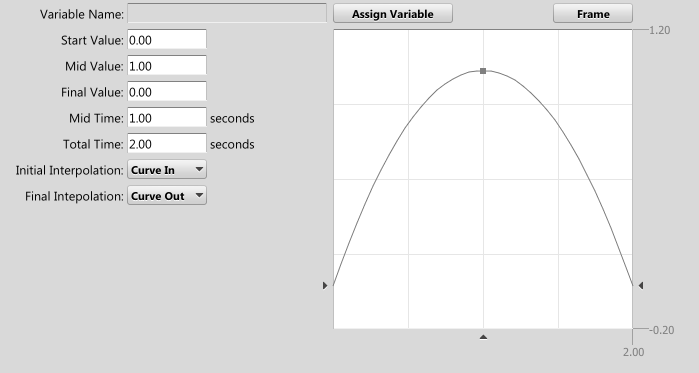

|
Move Variable |
| Related: | Text | Navigation |
Adjusts a variable over time.

The edit boxes are more easily controlled by adjusting the graph. The arrows along the sides and bottom are draggable, as well as the center point in the graph. The curve style can be adjusted with the drop downs "Initial Interpolation" and "Final Interpolation". The only manual assignment that need be done is the Total Time of the variable movement.
The variable to adjust is selected with the "Assign Variable". Note that the variable doesn't not interpolate to the starting position from where it was before - it will be snapped to the graph displayed, for the length of the movement.
 Execute Event Execute Event |
 Event Reference Event Reference |
 Event Reference: Event Reference: |

|
Miles Sound System 9.3b
E-mail miles3@radgametools.com for technical support. Copyright © 1991-2012 by RAD Game Tools, Inc. All Rights Reserved. |

|